Project Timeline
Milestones
-
Milestone 1: Friday of Week 4 - Tuesday of Week 5 (Camera -> Motion Sensor)
- Submit parts-ordering form. Outline relative milestones to gauge time allocation for hardware and software development.
- Create site to display and explain: team information, problem, solution, milestones, and more.
Motion Sensor Design

-
Milestone 2: Thursday of Week 5
- Finalize and submit PCB design for ordering.
- Draft up the software architecture. 4/30. Add PCB page and update milestones accordingly on the website.
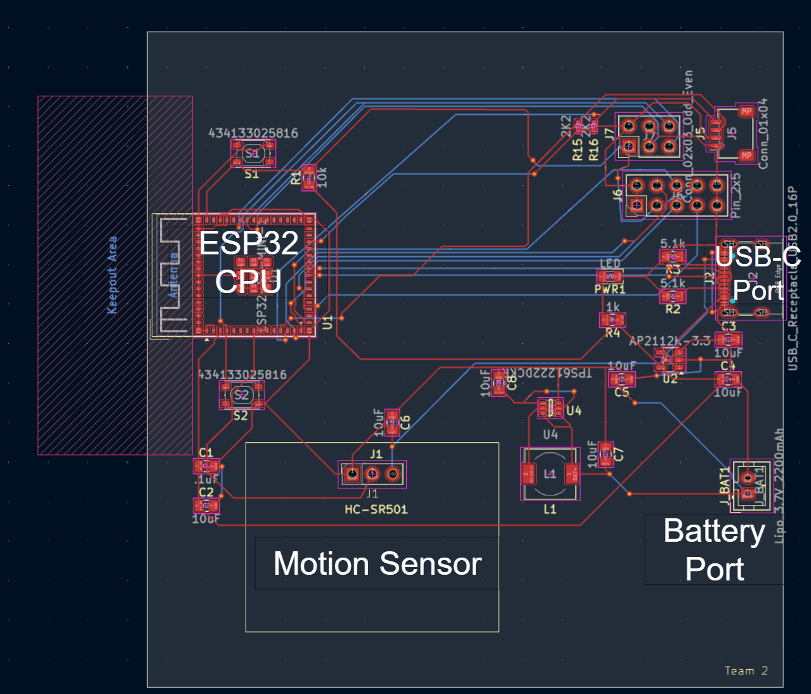
-
Milestone 3: End of Week 6 - End of Week 7 (PCB Issue: Motion sensor header pins)
- Assemble and bake PCB. Ensure USB-c connection lights up power LED indicator along with data transmission to the microcontroller.
- Finalize software architecture (especially tech stack).
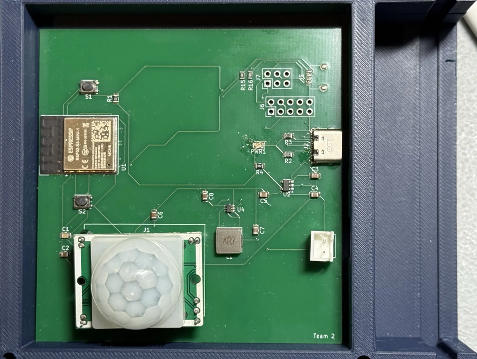
-
Milestone 4: End of Week 8 (Continued Hardware issues + Software Development)
- Configure a DigitalOcean Droplet to host the live site and analytics dashboard.
- Validate sensor data collection locally, ensuring the PIR sensor accurately captures motion (heat signatures) across a half-court radius.
- Program the hardware to transmit these trigger events directly to our cloud MySQL database.
- Design a mountable enclosure for the hardware and update the web platform with a dedicated page explaining our software architecture.
Sensor Testing
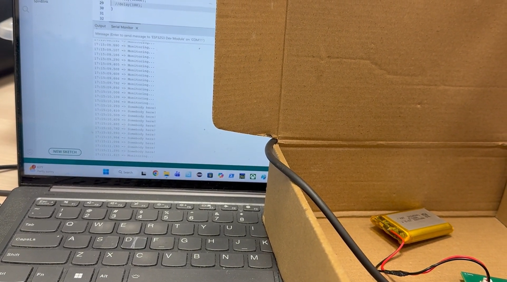
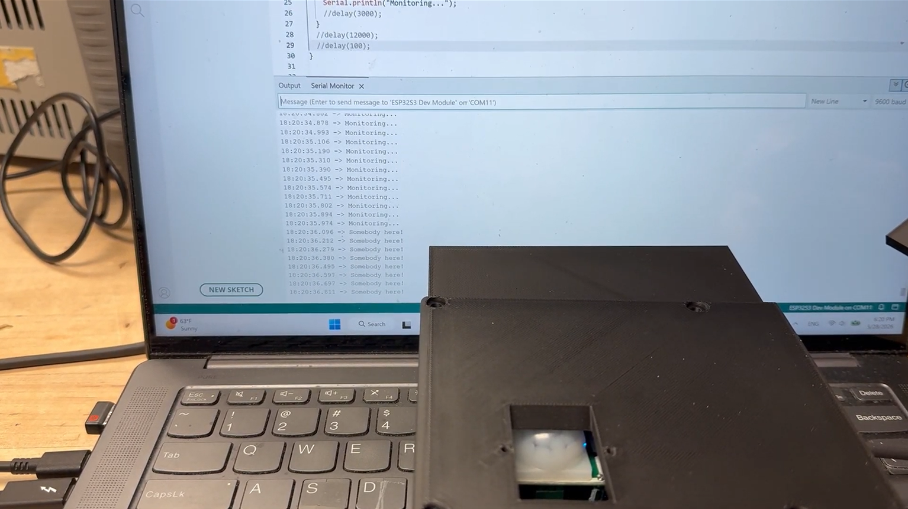
-
Milestone 5: Start of week 9 (3D Printed Enclosure Issues)
- Print out mountable enclosure for final product test.
- Leave product on basketball courts for 24 hours to simulate real-world usage and see if occupancy updates throughout the day and shows empty during closing hours.
- Update website with final video and poster links along with gifs/photos and descriptions of our final product.
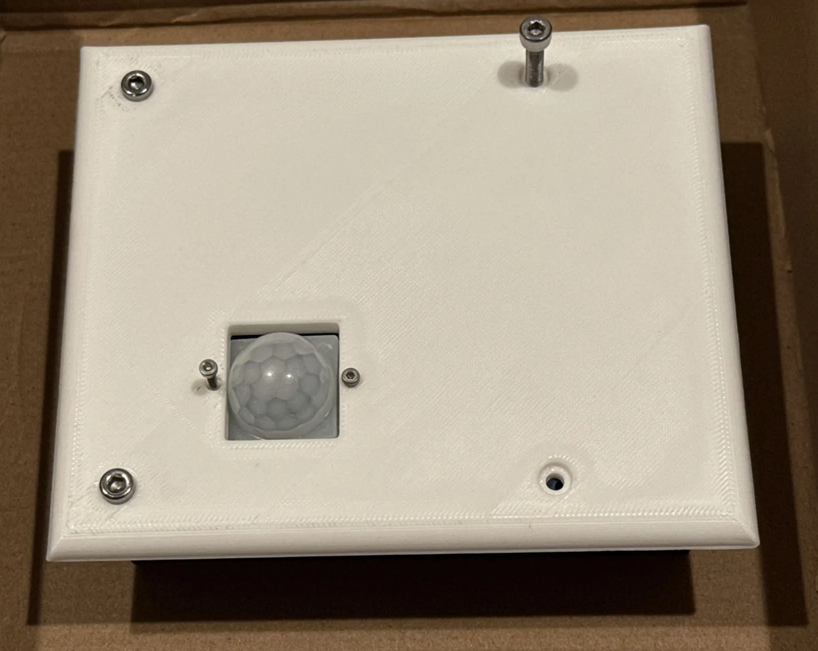
-
Milestone 6: End of Week 9
- Finalize all project documentation and prepare for presentation.
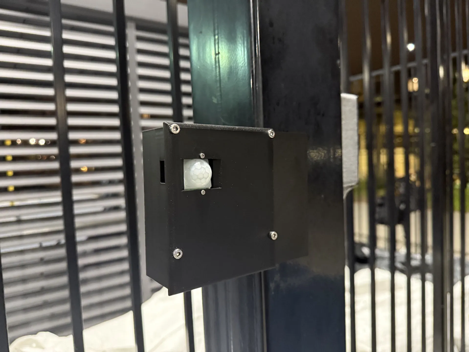
Challenges
-
Camera to Motion Sensor Pivot
We originally explored camera-based occupancy detection but pivoted to PIR motion sensors for simpler deployment, lower cost, and fewer privacy concerns. The design became centered around a motion sensor on the PCB with either an integrated 7 segment display or LCD screen to display or change the Court ID, manage settings, and help with debugging.
Camera Design
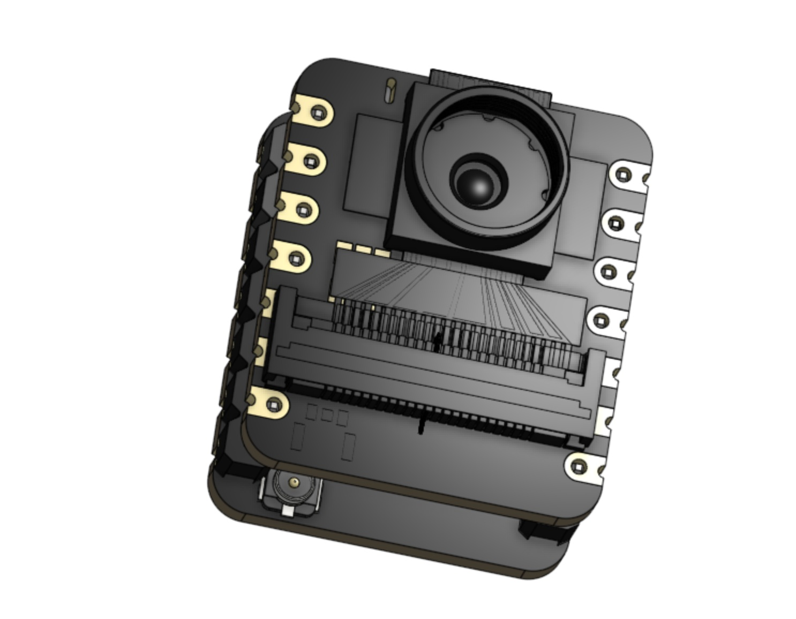
-
PCB Design Deadline
We struggled with the design of our PCB since none of us had experience going into this project. There were many PCB errors that had to be quickly resolved before the board was sent out to be manufactured. As a result, the external battery only powered the motion sensor. While the C port could power both the sensor and the ESP32, there was not sufficient voltage (5V) to the sensor, requiring both ports to be powered by external batteries to operate effectively. The initial enclosure design was also being designed and tested at this point.
Initial Prototype Design
 >
>
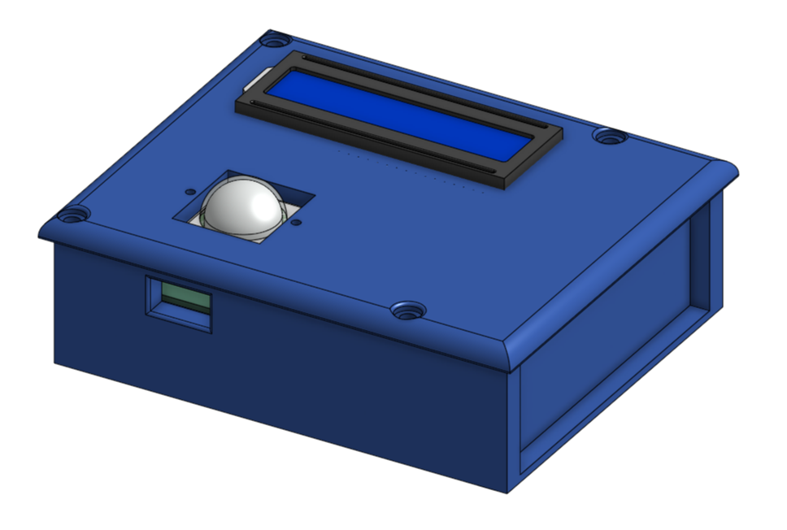
> -
Motion Sensor Header Pin Mismatch
After assembling the PCB, we discovered the motion sensor header pins did not match our footprint, resulting in a reverse polarity. We flipped the motion sensor around and it worked fine after that. This required the enclosure design to be taller as the sensor could not be mounted directly onto the PCB in this flipped position, as it blocks access to the adjustment controls and exposed pins could short out the ESP32. The sensor was mounted directly onto the lid and space had to be made for wire connections to the PCB. A mounting ledge was also added for more surface area to stick the enclosure under hoops or onto walls or lightpoles.
Revised Design

-
Hardware Reliability and Cloud Integration
At this point, we were trying to setup DigitalOcean for hosting but there were many account and funding issues. Customer support didn't get back to us after a week so we had to pivot to Render (backend), Vercel (frontend), and Turso (DB).
-
3D Printed Enclosure Fit Issues
Printed enclosure dimensions and mounting points needed adjustment before the hardware could be deployed on outdoor courts for live testing. Screw holes were misaligned, the connection ports were too small, and having a 20mm ledge on each side did not work for mounting
-
Final Documentation Sprint
Our Final deadlines/milestones were mostly pushed back by a week so there was a time crunch on that end.
CourtLiveTest2.png
Inital Prints
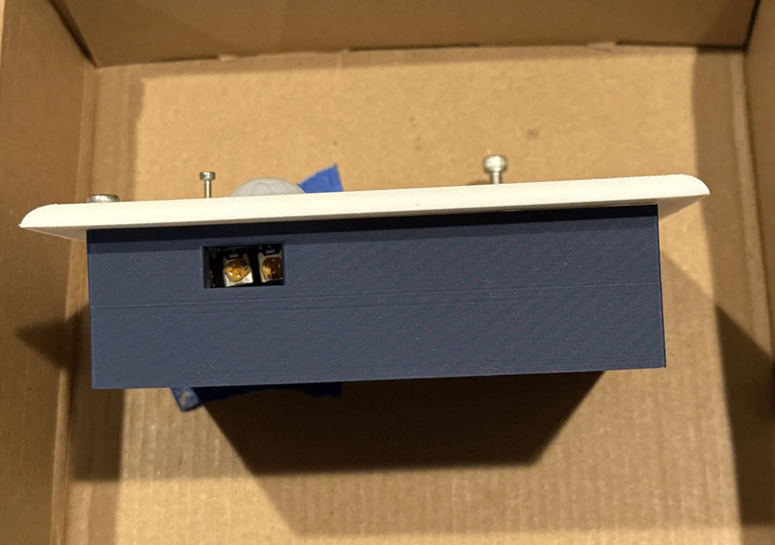
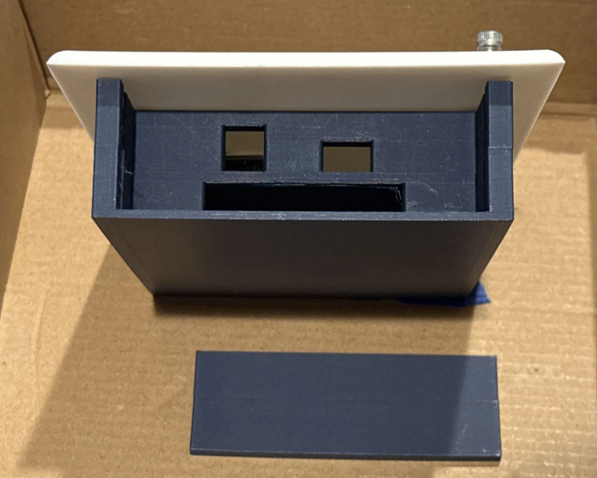
Testing on Court
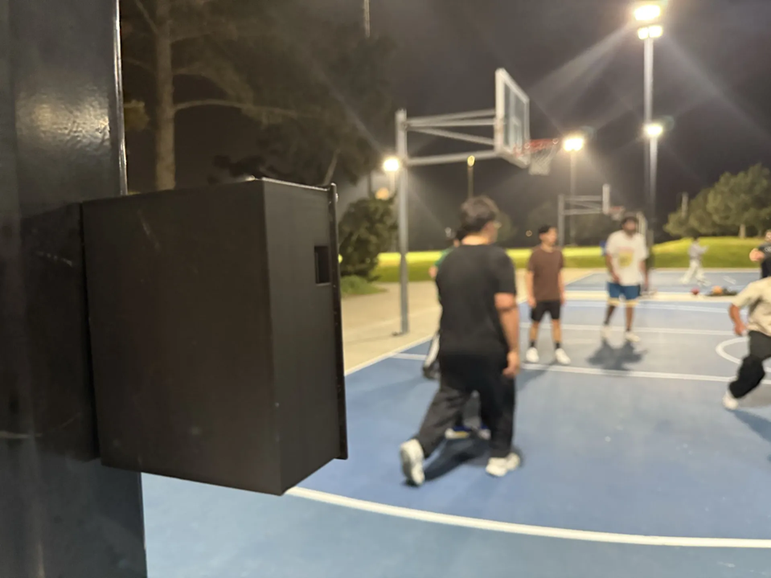